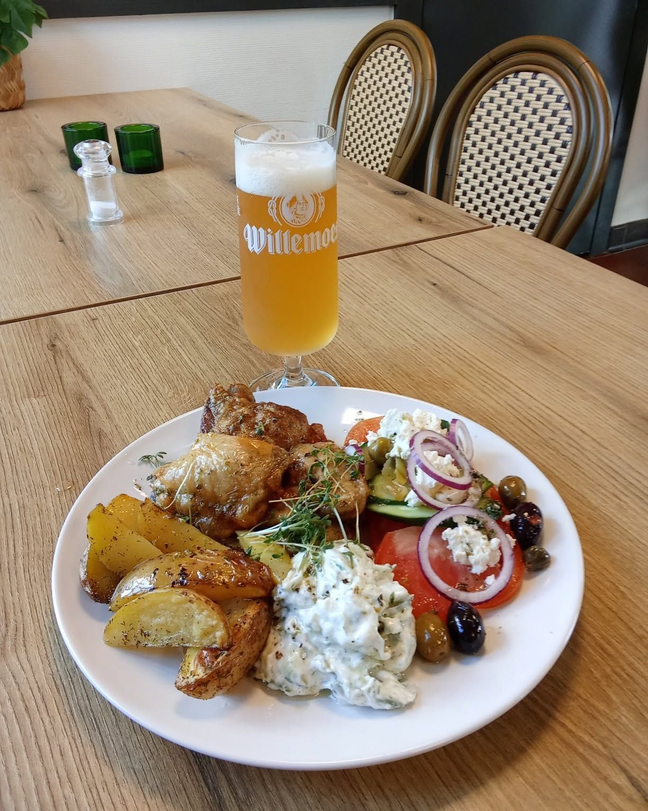
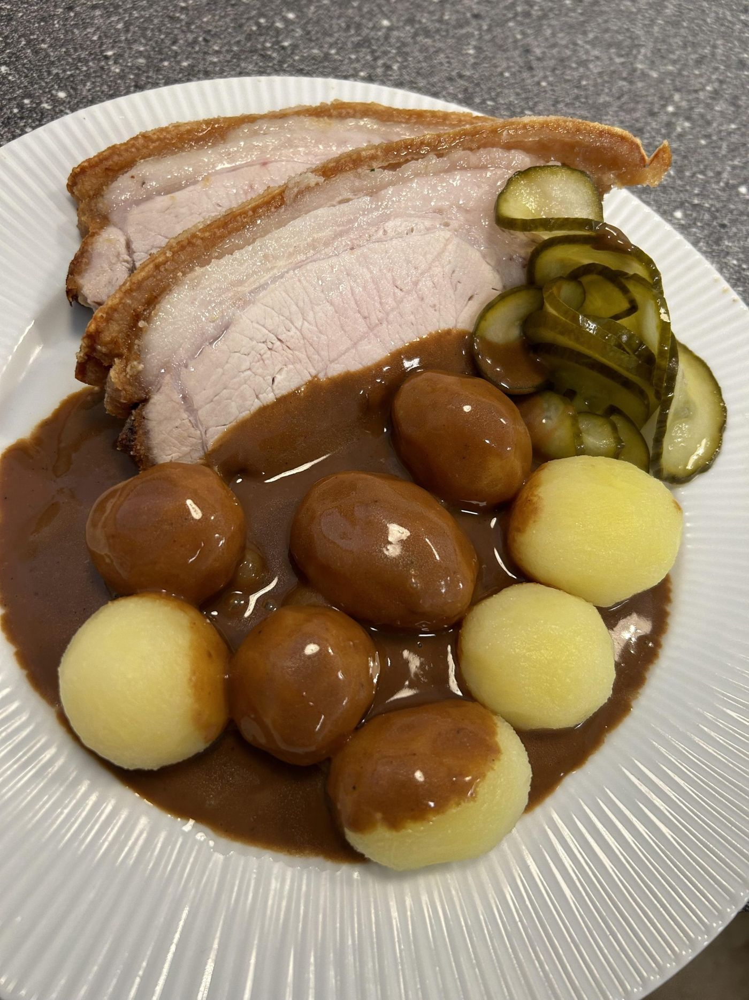

Dagens ret · fra køkkenet på stationen
Hvad står på i dag?
Dagens ret skifter løbende
Ring 30 80 72 41, så fortæller vi, hvad der står på
Ring 30 80 72 41, så fortæller vi, hvad der står på
I dag Torsdag 28. august
Græsk kylling med tzatziki og kartofler

135,- Spis her, eller ring og tag den med: 30 80 72 41Spis her, eller ring: 30 80 72 41
Dagens ret skifter løbende. Følg med her eller påSkifter løbende. Følg med her eller på Facebook
Ikke lige dig i dag?
Hele menukortet gælder altid: stjerneskud, pariserbøf, smørrebrød og Rapheephons thai. Alt kan spises her eller tages med hjem.
Hele menukortet Alt på kortet kan tages med

Spørg køkkenet direkte
Ring 30 80 72 41
Ons 16–20 · Tors–lør 12–20 · Søn 12–19